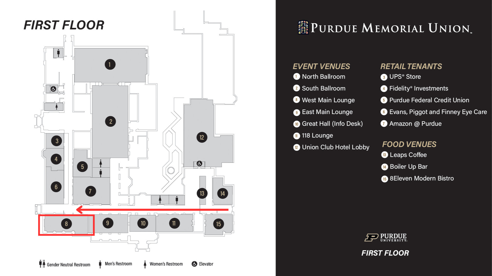

College of Science Career Fair - Employers
Meet and connect with Purdue College of Science students looking for career and internship
opportunities.
Registration is open until September 1, 2023.
To stay up to date with the latest College of Science Career Fair information, please email pssccareerfair@gmail.com to be added to our mailing list.
College of Science Career Fair 2023 Information:
Date: September 25, 2023
Time: 12:00 - 4:00 PM
Location: West Main Lounge @ Purdue Memorial Union, 101 Grant St, West Lafayette, IN 47906
Information Request
Need more information about the College of Science Career Fair? Please fill out this form. We will get back to you as soon as we can!
Questions? Contact us at pssccareerfair@gmail.com
with questions, inquiries, and concerns.
FAQs
+ When is the College of Science Career Fair?
The fair is September 25th from 12-4 PM EST. Employers can begin setting up at 11:00 AM EST.
+ Where will the fair be held?
The fair is hosted at the West Main Lounge in the Purdue Memorial Union (201 Grant St, West
Lafayette, IN 47906). This is located on the first floor. If you enter through the East entrance
near Grant Street, climb the stairs and head straight down the long hall. The room location will
be the last door on the left. Below is a map of the first floor of the Union.

+ Where should I park?
Employers should park in the Grant Street Parking Garage across from the Union (Grant Street
Parking Garage, located at 120 N. Grant Street, West Lafayette, IN 47906). Parking fees will
be covered. A member of the Purdue Science Student Council will be stationed at the East
entrance of the Purdue Memorial Union to help guide you to the fair’s location.
+ Is there a registration fee?
As this is our first career fair, we will not be charging a registration fee. In the
future, we may change this policy, but there is currently no fee to register your
company for the College of Science Career Fair.
+ Is there a limit to how many representatives or
tables I need?
We do not currently have any restrictions on the number of representatives or
tables. If you need more than one table, please specify that on the registration
form.
+ What will you be providing on the day of the
fair?
We will be providing tables, tablecloths, extension cords, and refreshments. If
you need us to provide anything else, please contact us and we will let you know
if the request is a possibility.